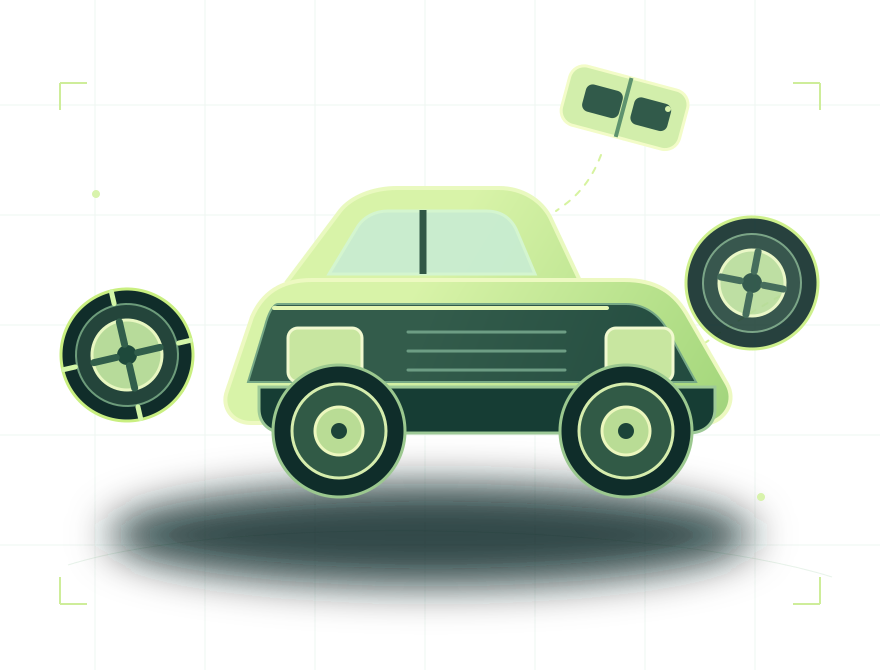

YOUR SECOND SET OF EYES
See the step.
Catch the
mismatch.
A visual assembly companion that turns a confusing build into one clear next move.
Interactive preview uses simulated results.

THE EXPERIENCE
Clarity, built into every step.
Capture the workspace. Understand what changed. Keep moving.
GET STARTED
Find your product.
Point your camera at the AssemLens QR code, or enter its product ID.
Camera access needs HTTPS or localhost. Manual entry is always available.
PRODUCT CHECK
FYD take-apart jeep
One visible checkpoint at a time.
Use a clear view with the relevant parts visible.
Visible state check
Compare the current assembly with an approved reference image.
Set the comparison goal
Upload a correct reference, then capture or upload the current view. The model checks only what is visible.
Images are sent to the selected AssemLens server for analysis. The live preview stays in your browser.
Result
FOUR STEPS / ONE CLEAR NEXT MOVE
Build with a coach.
Explore how the step-by-step experience works. Every result on this screen is simulated; no image is analyzed.
Attach the frame
No photos leave your browser in this preview.
Choose a scenario to see how the rules respond.
Build complete.
All four preview steps passed their simulated confirmation rules.